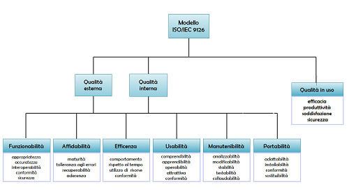

In parallelo all'analisi dell'elevoluzione architetturale del sistema software, è stata condotta un'analisi qualitativa e quantitativa sulle major release del sistema. A tale scopo sono state scelte diverse metriche per caratterizzarne determinati aspetti. Le metriche sono state estratte mediante l'utilizzo del tool Metrics. Poichè metriche diverse presentano scale
di valori differenti, i rispettivi valori sono stati normalizzati nell'intervallo [0:1] con la tecnica della Min-Max Normalization.
La descrizione del modello di qualità del software è stato effettuato utilizzando le normative e linee guida dello standard ISO/IEC 9126. Il modello propone un approccio alla qualità in modo che le società di software possano migliorare l'organizzazione e i processi e quindi la qualità dei propri prodotti software. Il modello di qualità si compone di quattro parti fondamentali:
- Modello della qualità del software;
- Metriche per la qualità esterna;
- Metriche per la qualità interna;
- Metriche per la qualità in uso.
Il modello di qualità stabilito nella prima parte dello standard, ISO/IEC 9126-1, è classificato da sei caratteristiche generali:
- Funzionalità: è la capacità di un prodotto software di fornire funzioni che soddisfano esigenze stabilite, necessarie per operare sotto condizioni specifiche.
- Affidabilità: è la capacità del prodotto software di mantenere uno specificato livello di prestazioni quando usato in date condizioni per un dato periodo.
- Efficienza: è la capacità di fornire appropriate prestazioni relativamente alla quantità di risorse usate.
- Usabilità: è la capacità del prodotto software di essere capito, appreso, usato e benaccetto dall'utente, quando usato sotto condizioni specificate.
- Manutenibilità: è la capacità del software di essere modificato, includendo correzioni, miglioramenti o adattamenti.
- Portabilità: è la capacità del software di essere trasportato da un ambiente di lavoro ad un altro. (Ambiente che può variare dall'hardware al sistema operativo).

L'analisi di qualità si è concentrata in particolar modo sullo studio della manutenibilità e sull'evoluzione del sistema software.